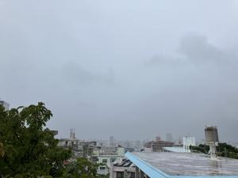

うるがいの話 ある日
最新: 数学科【うるがいの話 ある日】とは 一日だけのプログです
『うるがいの話』の最新一日だけのプログで、通信料が少なく経済的だ。カニの画像をクリックすると全ての日付が載る『うるがいの話』サイトを表示します
|
|
【うるがいの話】 うるがい(ｳﾙｶﾞｲ urugai)とは、『もずくがに』の名前でとても大きくなります。 |
|---|---|
|
|
【カミマヤーの話】 猫のことを方言でマヤーといいます。カミマヤー（kamimayaa）とは、神の猫のことです。 |
|
【たながぁの音楽】 たながぁ（ﾀﾅｶﾞｰ tanagaa）とは手長えびのことで、何種類かあり大きいのは車 エビぐらいになります。 |

|
【ぶながぁの話】 ぶながぁ(ﾌﾞﾅｶﾞｰ bunagaa)とは、赤い髪の毛、赤い身体、そして身長は１ｍ２０ｃｍ ぐらい、川の蟹を食べているの目撃された。場所は沖縄県国頭郡大宜味村のと ある村僕の隣近所に住んでいる爺さんから、聞いた話です。 |
|
|
【ギーマの話】 ギーマ(giima)とは、山原の里山に咲くスズランに似た、 花を付けます。実は食べられます、 気が付くと口の周りが紫になっています。 |
2025年07月25日 (金）数学科
15:33

台風７号は何処へ行ったのでしょう、今朝はまったく風もない。昨
日の強風がウソのようだった。
『とてつもないことが、此処である』、北部支店に努めていた職員
からインサイダーみたいなことを、言われたことがある。今日から
ジャングリアが開園、台風で中止にならなくて良かった。職員はそ
の後、退職したのだがジャングリアに関係しているのだろうか・・
【速報】ジャングリア５０人が行列、一番乗りは午前３時 きょう
９時１５分オープン（７月２５日午前７時）琉球新報
昨日はジョギングができませんでした、調子が狂うのですよ。夜中
の３時に目覚め、本を読む。
数学記号の誕生 ジョセフ メイザー 河出書房新社より
＋、－、×、÷、πなどの数学記号はなぜ、どのように生まれたの
か、１５世紀が終わる前は、数学の表現はほとんどすべて言葉によ
っていた。
あのピタゴラスの定理「ａ²＋ｂ²＝ｃ²」を言葉で表現していたとは
フムフム、
私たちはぼんやりした絵、ぼやけた記号―そこにあってない―で考
え、日々の仕事ができるようにしている感覚や印象で考える。
文学では、意識をたどるにも時間差がある。ドストエフスキーの『
罪と罰』を読んで、ラスコーリニコフが老女の頭を斧で殴打すると
ころまでやって来たとき、その斧は、その先へ進むとどんな役割を
演じるか。
え！、これから英語の『罪と罰』を読もうと図書館から借りている
ンー、つながっている。人生について何も考えていなかったので、
最初の大学受験は、理学部数学科でした。不合格だったけど、もし
合格していたら、人生変わっていたのだろうか。